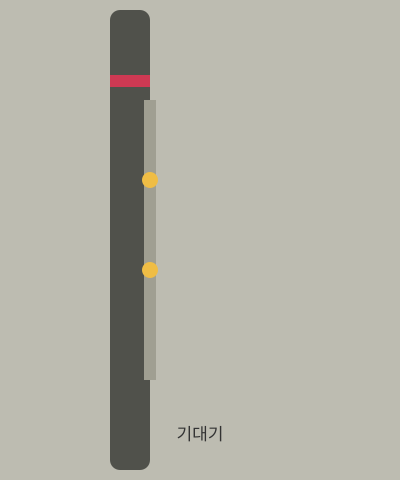
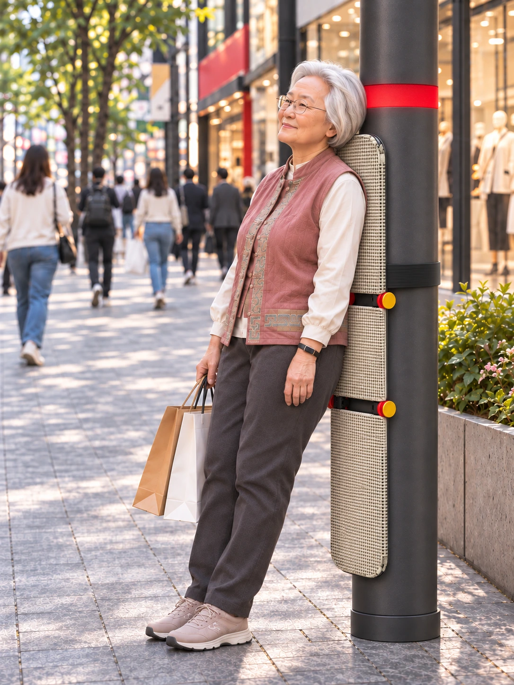
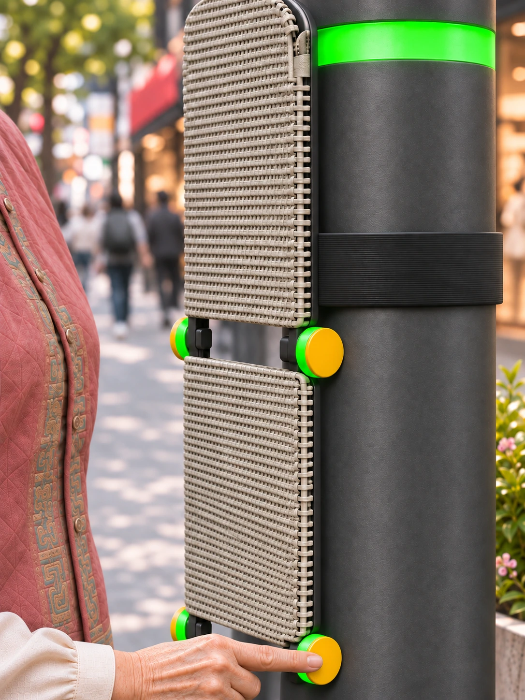
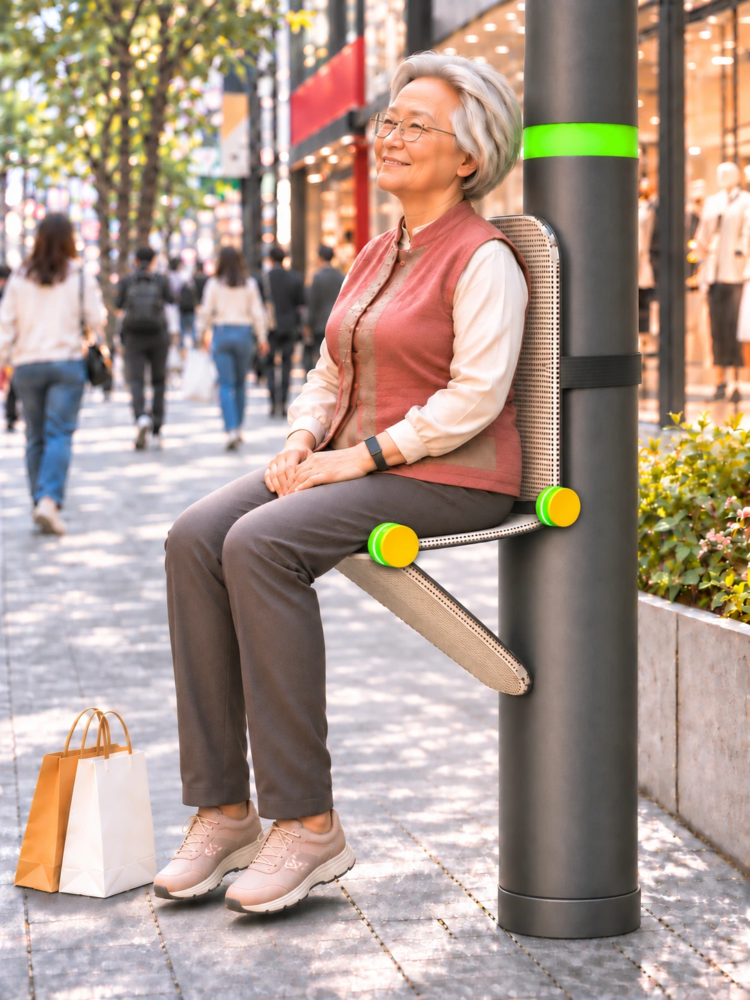
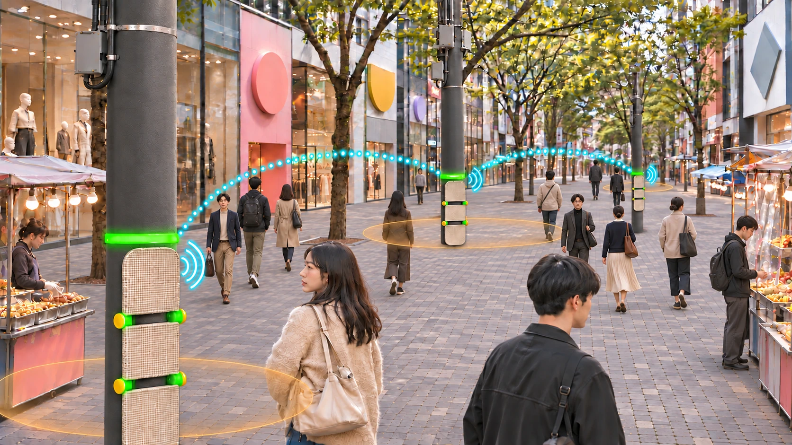
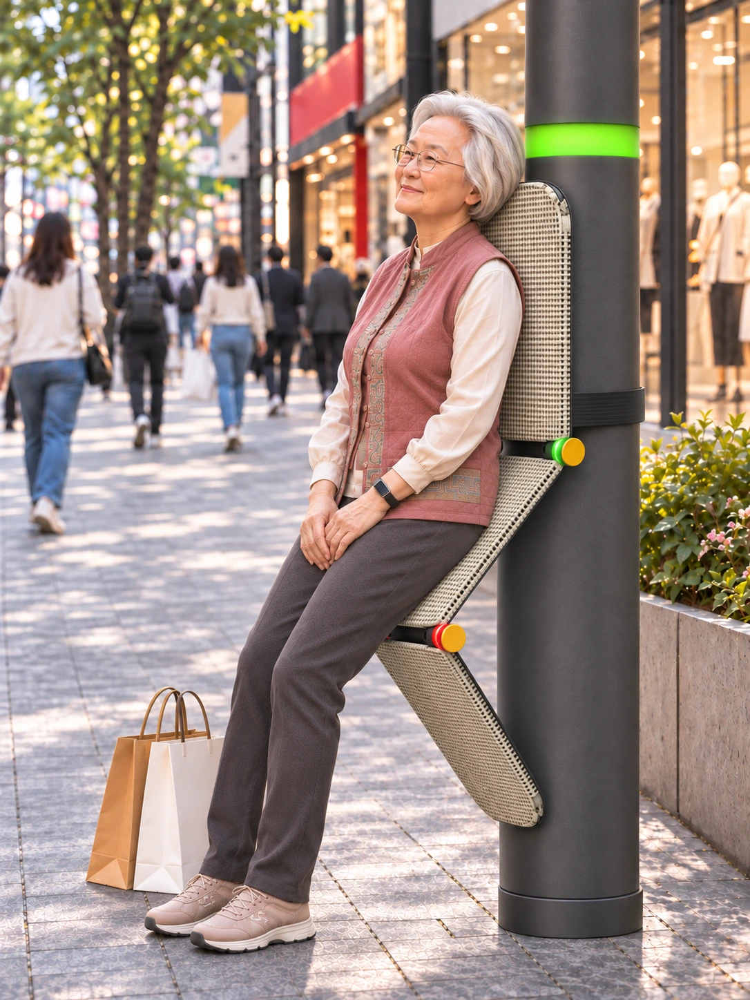

휴식이 필요한 순간
쇼핑하며 오래 걸은 영숙 씨는 다리가 피로해 잠시 앉고 싶어진다.
PRODUCT 02 — 2030 명동 거리
거리의 흐름에 맞춰,
기대고, 걸터앉고, 앉는다.
버튼을 선택하면 손이 나타나 기기를 작동합니다.

01 — LEAN01 / WHY WE PAUSE
보행량은 계속 변하지만, 그 안에서 잠시 쉴 수 있는 공간은 유연하게 확보되지 않습니다. 머무름:틈은 거리의 여유를 읽고, 그 순간 가능한 휴식 자세를 제안합니다.

PRIMARY PERSONA02 / PRIMARY PERSONA
명동에서 친구를 만나거나 쇼핑하는 것을 좋아한다. 혼자 이동하는 데 큰 어려움은 없지만, 오래 걸으면 다리에 피로가 쌓여 잠깐 앉아서 쉬고 싶어 한다.
서울 거주 / 은퇴 후 일상적인 외출과 쇼핑을 즐기는 여성
03 / PROBLEM
쇼핑하며 오래 걸은 영숙 씨는 다리가 피로해 잠시 앉고 싶어진다.
혼잡한 골목에서 쉴 곳을 찾지만, 사람이 오가는 길가에 멈추기가 망설여진다.
통행을 방해할까 신경 쓰여 충분히 쉬지 못하고 다시 걷는다.
04 / ONE DEVICE, THREE POSTURES
전봇대에 붙어 있던 면이 두 관절을 중심으로 접히며,
지금 거리에서 가능한 휴식 자세로 바뀝니다.
위 노란 관절 → 걸터앉기 · 아래 노란 관절 → 앉기
혼잡한 거리
두 버튼이 모두 빨간빛이면 펼침이 제한됩니다. 접힌 메쉬 면에 몸을 기대어 잠시 쉽니다.
노란 버튼 캡은 그대로, 옆면 LED 띠가 사용 가능 여부를 알려줍니다.
05 / CONNECTED REST
기기들은 주변의 혼잡도 정보를 서로 주고받습니다.
AI는 가능한 자세를 정하고, 사용자는 빛을 보고 직접 선택합니다.
주변 기기들이 보행 흐름과 거리의 혼잡도 정보를 주고받습니다.
AI가 지금 펼쳐도 되는 휴식 자세를 정하고, 초록·빨간빛으로 안내합니다.
위 버튼은 걸터앉기, 아래 버튼은 앉기. 사용자가 가능한 자세 중 원하는 쉼을 선택합니다.
06 / PRESENTING A SCENARIO
가까운 곳에서 휴식 공간을 발견하고, 원하는 자세로 쉬어간 뒤 다시 이동합니다.
걷다 지친 영숙 씨는 가까운 곳에서 이용 가능한 휴식 장치를 발견한다.

02AI가 주변 보행 흐름을 확인하고, 영숙 씨는 가능한 자세 중 앉기를 선택한다.

03아래 버튼을 눌러 앉기를 선택하면 좌판이 부드럽게 펼쳐져, 통행을 방해하지 않는 작은 휴식 공간을 만든다.

04사용이 끝나면 장치는 주변 상황에 따라 접히고, 영숙 씨는 다시 이동한다.

PHYSICAL USER INTERFACE
화면을 읽거나 복잡한 메뉴를 찾지 않아도 됩니다. 두 개의 노란 버튼과 초록·빨간 LED가 몸에 가까운 곳에서 선택을 돕습니다.
07 / DRAWING & MATERIAL
버튼 포함 폭 × 깊이 × 기기 높이
상·하 관절 중심 높이 약 1,119 / 664 mm
전봇대 지름 488 mm · 고정부 최대 폭 528 mm
기기 최하단 지상 높이 47 mm
차콜 프레임과 두 관절. 버튼 옆면의 초록·빨간빛으로 사용 가능한 자세를 안내합니다.
제공한 최종 모델링 도면 기준 · 단위 mm · 자세별 치수는 도면에서 확인할 수 있습니다.
기대고 앉는 면을 감싸는 직조 질감.
전봇대와 연결되는 구조와 두 개의 관절.
찾기 쉬운 조작부, 초록과 빨강으로 구분하는 사용 가능 상태.
STAY: GAP / 머무름:틈